GnRHcell is an R package for identifying and characterizing rare gonadotropin-releasing hormone (GnRH) neurons in single-cell transcriptomic datasets. It combines GNRH1 expression with lineage, migration, neuroendocrine, neighborhood, and alternative-program evidence in a Seurat-compatible workflow.
The central principle is to avoid relying on GNRH1 expression alone. Orthogonal biological evidence supports dropout rescue, confidence classification, and developmental-stage inference.
The package provides:
- GnRH-cell detection with direct, supported, and dropout-rescue evidence;
- confidence classification and diagnostic scoring;
- developmental staging and stage refinement;
- GnRH-lineage and stage-specific marker discovery;
- donor-aware marker prioritization;
- multi-dataset processing, comparison, and validation;
- publication-ready embeddings, feature plots, dot plots, networks, and reports;
- five reference Seurat datasets for examples and validation.
Documentation: ymbouamboua.github.io/GnRHcell
Installation
Install the development version from GitHub with pak:
# install.packages("pak")
pak::pak("ymbouamboua/GnRHcell")Alternatively, use remotes:
# install.packages("remotes")
remotes::install_github("ymbouamboua/GnRHcell")Load the package:
Quick start
run_gnrh() performs detection, developmental staging, and diagnostics and returns the updated Seurat object.
# `obj` should contain normalized expression data.
# A dimensional reduction is recommended for visualization.
obj <- run_gnrh(obj)Observed log for the bundled hpsc object:
[GNRH] ==== STARTING GnRHcell PIPELINE ====
[STEP] [1/3] Detecting GnRH cells
[INFO] Using assay: RNA
[INFO] Matrix loaded: 33538 genes by 2400 cells
[INFO] Using GnRH gene: GNRH1
[DONE] Detection complete. Duration: 0.4s
[STEP] [2/3] Assigning developmental stages
[DONE] Staging complete. Duration: 0.1s
[STEP] [3/3] Running diagnostics
[DONE] Diagnostics complete. Duration: 0.0s
[INFO] PIPELINE SUMMARY
[INFO] Status:
[INFO] neg: 1743
[INFO] pos: 657
[INFO] Stage:
[INFO] identity: 341
[INFO] migrating: 118
[INFO] mature: 198
[INFO] non-gnrh: 1743
[INFO] Secretory:
[INFO] limited: 118
[INFO] supported: 539
[INFO] non-gnrh: 1743
[DONE] ==== GnRHcell PIPELINE COMPLETE ==== Duration: 0.6sInspect the principal outputs:
table(obj$gnrh_status, useNA = "ifany")
table(obj$gnrh_class, useNA = "ifany")
table(obj$gnrh_confident, useNA = "ifany")
table(obj$gnrh_stage, useNA = "ifany")Result:
| Output | Category | Cells |
|---|---|---|
| Status | neg |
1,743 |
| Status | pos |
657 |
| Stage | identity |
341 |
| Stage | migrating |
118 |
| Stage | mature |
198 |
| Stage | non-gnrh |
1,743 |
The most frequently used metadata columns include:
Important output groups are:
| Output | Typical values or interpretation |
|---|---|
gnrh_status |
Binary detection status: neg, pos
|
gnrh_class |
Detection evidence: neg, dropout_rescue, supported, direct
|
gnrh_confident |
High-confidence detection flag |
gnrh_stage |
non-gnrh, identity, migrating, mature, secreting
|
gnrh_score |
Composite GnRH detection score |
gnrh_support_score |
Supporting lineage and biological evidence |
gnrh_identity_score |
Identity-stage evidence |
gnrh_migrating_score |
Migration-stage evidence |
gnrh_mature_score |
Maturation-stage evidence |
Results at a glance
The bundled demo objects provide a compact test of the same workflow across developmental models, peripheral migratory tissue, and mouse and human hypothalamic references.
| Demo dataset | Cells | GnRH detected | Identity | Migrating | Mature |
|---|---|---|---|---|---|
| hPSC-derived GnRH | 2,400 | 657 | 341 | 118 | 198 |
| Human fetal nose | 2,125 | 125 | 57 | 58 | 10 |
| Human median eminence | 2,161 | 161 | 42 | 25 | 94 |
| Mouse HypoMap | 2,174 | 174 | 10 | 0 | 164 |
| Human HypoMap | 2,400 | 400 | 27 | 105 | 268 |
Interpretation. These demo objects were intentionally sampled to retain GnRH-relevant cells. Counts and percentages describe only the bundled objects; they are not prevalence estimates for the complete source atlases. Detection and staging are GnRHcell outputs and require independent biological validation.
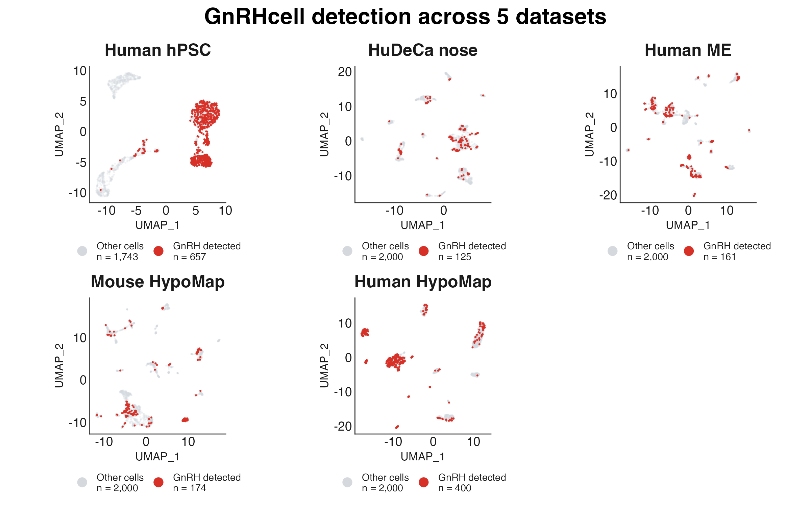
Detected cells occupy coherent transcriptional neighborhoods across the five demo objects, while their distribution varies with biological context and source study.
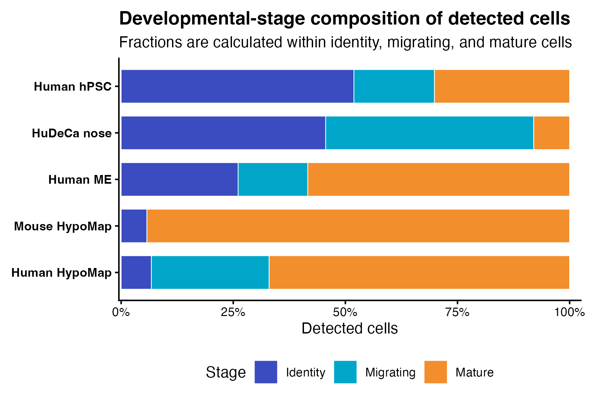
Stage composition separates identity-rich differentiation and fetal-nose objects from the mature-cell-dominated hypothalamic references. The full table, figure-building code, and interpretation notes are available in the demo results gallery.
Demo datasets and primary references
The repository includes five compact, preprocessed Seurat objects for examples, testing, and method demonstration. These objects are sampled derivatives of the source studies: their cell counts and cell-type proportions therefore differ from the complete published datasets and should not be used to reproduce the original study statistics.
| ID | Demo object | Cells | Source study |
|---|---|---|---|
hpsc |
Human pluripotent stem cell-derived GnRH differentiation | 2,400 | Deciphering the Transcriptional Landscape of Human Pluripotent Stem Cell-Derived GnRH Neurons (GEO: GSE212901) |
hudeca_nose |
Human fetal nose, post-conception weeks 7–12 | 2,125 | A single-cell and spatial atlas of early human olfactory development (EGA: EGAD50000001712) |
human_me |
Human median eminence/hypothalamic samples from control, Alzheimer’s disease, and frontotemporal dementia donors | 2,161 | Sauve et al. (2026), Tanycytic degeneration impairs tau clearance and contributes to Alzheimer’s disease pathology |
mouse_hypomap |
Integrated mouse hypothalamus atlas | 2,174 | Steuernagel, Lam, Klemm et al. (2022), HypoMap—a unified single-cell gene expression atlas of the murine hypothalamus |
human_hypomap |
Human hypothalamus atlas | 2,400 | Tadross, Steuernagel, Dowsett et al. (2025), A comprehensive spatio-cellular map of the human hypothalamus |
Please cite both GnRHcell and the corresponding primary study when using a demo object. Consult the linked source repository or archive for the complete dataset, original processing details, access conditions, and reuse terms.
Because these objects are stored as .rds files, load them with readRDS() rather than data():
load_gnrh_data <- function(name) {
available <- c(
"hpsc",
"hudeca_nose",
"human_me",
"mouse_hypomap",
"human_hypomap"
)
name <- match.arg(name, available)
path <- system.file(
"extdata",
paste0(name, ".rds"),
package = "GnRHcell"
)
if (!nzchar(path)) {
stop("Dataset not found in the installed GnRHcell package: ", name)
}
readRDS(path)
}
hpsc <- load_gnrh_data("hpsc")
hpscAn object of class Seurat
33538 features across 2400 samples within 1 assay
Active assay: RNA (33538 features, 2000 variable features)
3 layers present: data, counts, scale.data
3 dimensional reductions calculated: pca, harmony, umapLoad all reference datasets when sufficient memory is available:
dataset_ids <- c(
"hpsc",
"hudeca_nose",
"human_me",
"mouse_hypomap",
"human_hypomap"
)
reference_objects <- setNames(
lapply(dataset_ids, load_gnrh_data),
dataset_ids
)For memory-constrained analyses, load and process one object at a time.
Visualization
Embeddings
plot_gnrh_embedding(
hpsc,
group_by = "gnrh_status",
reduction = "umap",
style = "classic"
)
plot_gnrh_embedding(
hpsc,
group_by = "gnrh_stage",
reduction = "umap",
percentage = TRUE,
label = TRUE,
repel = TRUE,
cols = gnrh_colors("stage")
)Result from the bundled hpsc object:
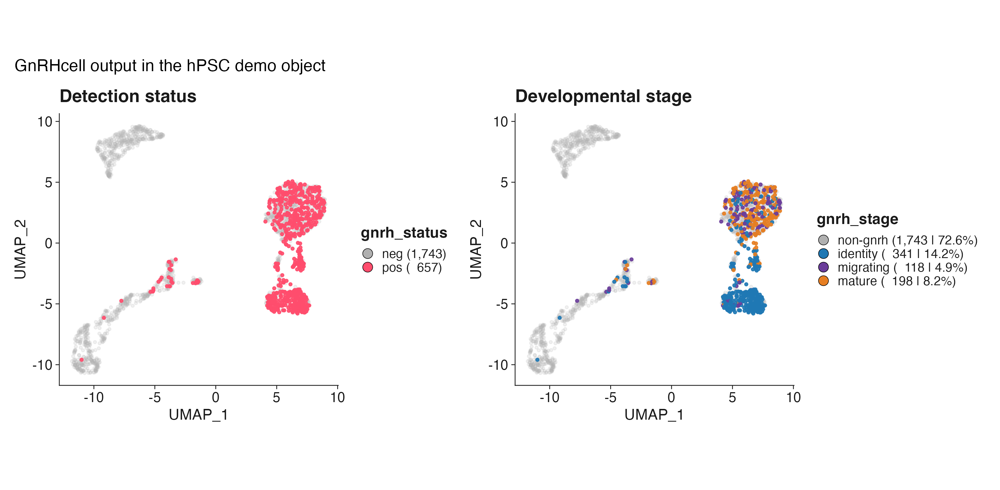
Large datasets are rasterized automatically when appropriate.
Feature presets
plot_gnrh_feature() supports direct feature names and GnRHcell presets.
plot_gnrh_feature(
hpsc,
preset = "core",
reduction = "umap",
ncol = 4
)
plot_gnrh_feature(
hpsc,
preset = "modules",
theme.cols = "viridis",
reduction = "umap",
ncol = 4
)
plot_gnrh_feature(
hpsc,
preset = "staging",
theme.cols = "gnrh",
reduction = "umap",
ncol = 3
)Core-feature result:
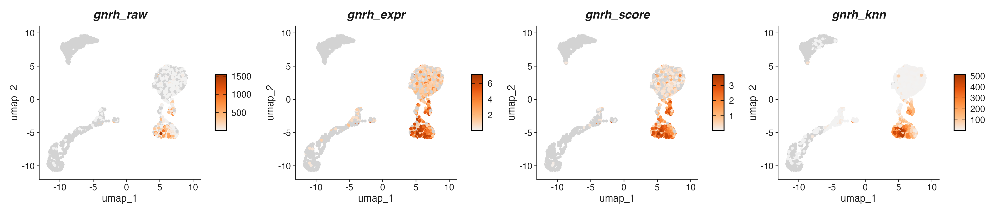
Plot arbitrary genes or metadata fields:
plot_gnrh_feature(
hpsc,
features = c("GNRH1", "FEZF1", "ISL1", "DCX"),
ncol = 4
)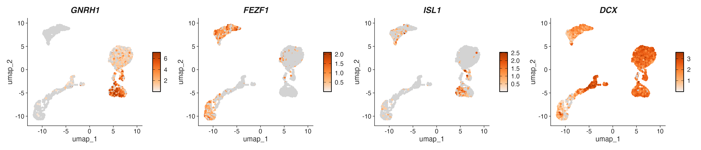
Dot plots
plot_gnrh_dot(
hpsc,
features = c(
"ISL1","SIX3","DLX1","DLX2","DLX5","DLX6","PBX3","RASD1","RMST", # identity
"PROKR2","NSMF","SEMA3C","SEMA3F","ROBO2","ROBO3","RIPOR2","PLXNA3","SLIT1","CXCR4", # migrating
"KISS1R","DOC2B","PTPRN","BAIAP3","ECEL1","SCG2","SCG5","NALCN" # mature
),
group.by = "gnrh_stage",
dot.outline = TRUE,
th.cols = "RdYlBu"
)Result:
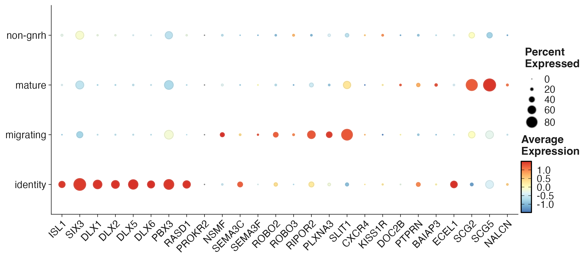
Distributions
plot_gnrh_distribution(
hpsc,
group.by = "gnrh_stage",
split.by = "orig.ident",
proportion = TRUE,
label = FALSE,
cols = gnrh_colors("stage")
)Result:
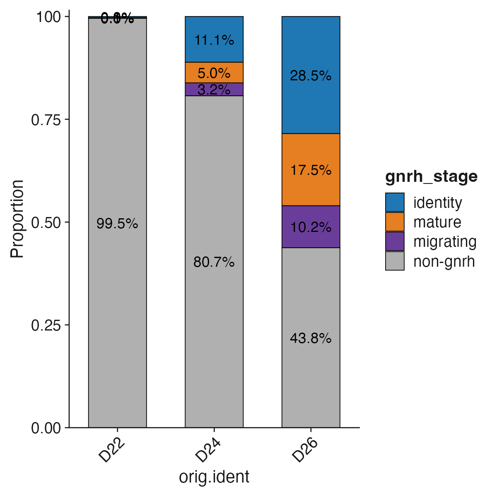
Diagnostic report
report <- gnrh_report(
hpsc,
roc_mode = "internal",
style = "bw"
)
reportCompact internal diagnostic result:
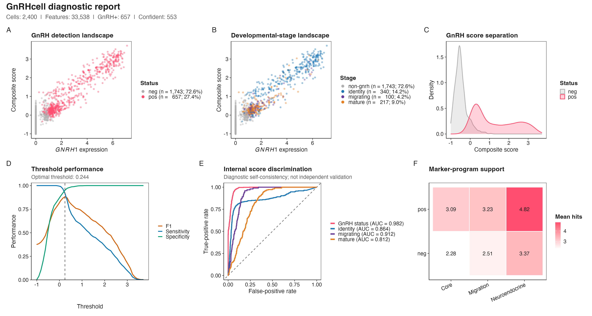
Internal ROC curves describe score discrimination against classifications produced by the same scoring system. They are diagnostic and should not be interpreted as independent validation.
When an independent manual or reference annotation is available:
report <- gnrh_report(
hpsc,
truth = "gnrh_class",
positive_truth = c("GnRH", "pos", "TRUE"),
roc_mode = "external",
style = "bw"
)
report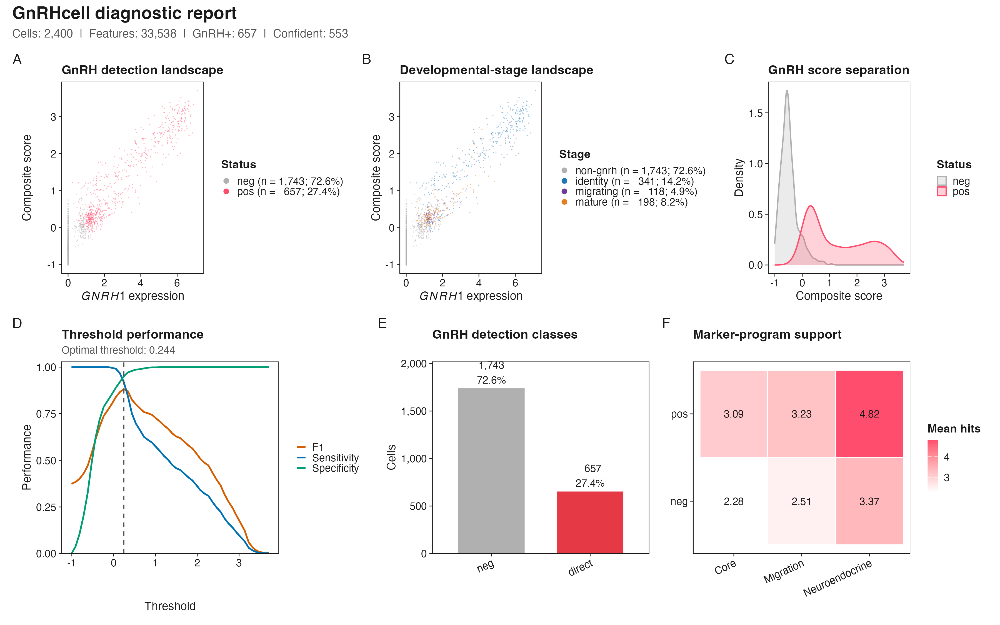
Export a vector report:
GnRH-lineage marker discovery
find_gnrh_genes() identifies genes enriched in GnRH-positive cells relative to biologically matched controls and ranks them using differential expression, specificity, GNRH1 co-detection, and donor recurrence.
genes <- find_gnrh_genes(
object = hpsc,
annotation_col = "ann2",
control_ident = "GLU",
donor_col = "orig.ident",
assay = "RNA",
layer = "data"
)
head(genes$candidates, 20)
genes$donor_cellsTop results from the hpsc comparison (gnrh_status == "pos" versus ann2 == "GLU" controls):
| Gene | log2 fold change | Target detection | Control detection | Specificity | GNRH1 co-expression |
|---|---|---|---|---|---|
DLX5 |
6.40 | 38.7% | 1.1% | 0.376 | 0.529 |
DLX1 |
6.90 | 33.6% | 0.5% | 0.331 | 0.486 |
ARX |
7.25 | 31.2% | 0.4% | 0.308 | 0.499 |
DLX2 |
6.58 | 30.9% | 0.5% | 0.304 | 0.449 |
RASD1 |
6.85 | 27.9% | 0.5% | 0.273 | 0.442 |
The complete result is available in hpsc-lineage-markers.csv.
Choose annotation_col and control_ident according to the metadata and biology of the dataset. The control population should represent a relevant non-GnRH neuronal comparison rather than all cells indiscriminately.
Co-expression and gene networks
plot_gnrh_coexpr(
genes$markers,
coexp_cutoff = 0.30
)
plot_network(
genes$markers,
top_n = 40,
threshold = 0.20
)Result:
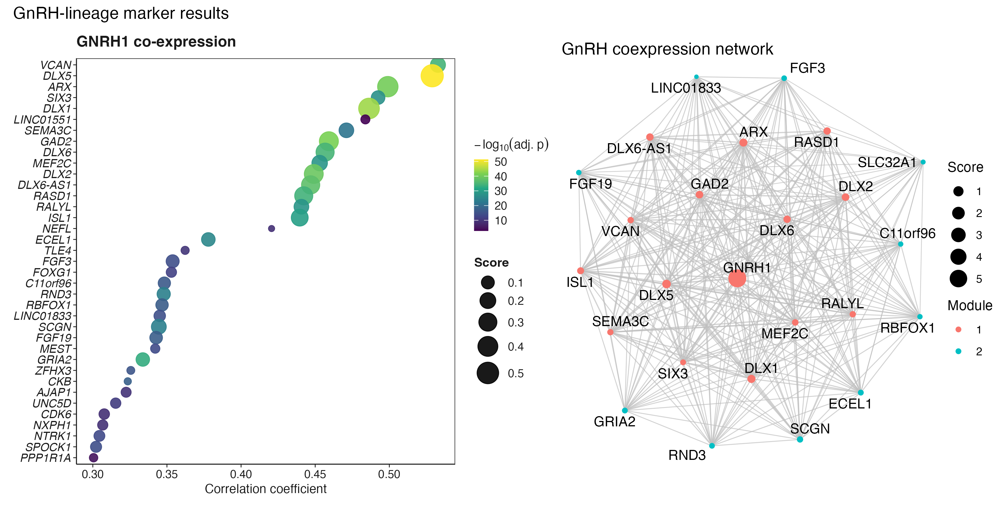
Stage-specific marker discovery
find_gnrh_stage_markers() compares each selected developmental stage with the other GnRH-positive stages. It does not require coexpression with GNRH1, avoiding enrichment for general GnRH-lineage markers.
stage_markers <- find_gnrh_stage_markers(
object = hpsc,
stage_col = "gnrh_stage",
stages = c("identity", "migrating", "mature"),
class_col = "gnrh_class",
positive_classes = c("direct", "supported"),
donor_col = "orig.ident",
assay = "RNA",
layer = "data"
)
stage_markers$stage_counts
head(stage_markers$candidates, 20)Top stage-associated results in the hpsc demo:
| Stage | Gene | log2 fold change | Detected in target | Detected in reference | Adjusted P |
|---|---|---|---|---|---|
| Identity | DLX5 |
4.28 | 67.2% | 7.9% | 2.83e-51 |
| Identity | DLX1 |
5.18 | 61.3% | 3.8% | 9.13e-50 |
| Identity | SIX3 |
2.32 | 85.0% | 52.2% | 5.87e-45 |
| Migrating | SLIT1 |
1.70 | 78.0% | 32.3% | 1.79e-21 |
| Migrating | UBE2E3 |
0.54 | 97.5% | 97.0% | 9.69e-08 |
| Migrating | TBR1 |
0.98 | 72.9% | 45.8% | 6.74e-06 |
| Mature | SCG2 |
2.44 | 80.3% | 25.7% | 2.79e-40 |
| Mature | EMX2 |
1.54 | 94.4% | 44.7% | 1.69e-35 |
| Mature | LHX5-AS1 |
1.35 | 95.5% | 50.5% | 1.42e-29 |
library(dplyr)
top <- stage_markers$candidates %>%
group_by(stage) %>%
top_n(n = 5, wt = avg_log2FC)
plot_gnrh_dot(
hpsc,
features = rev(top$gene),
group.by = "gnrh_stage",
dot.outline = TRUE,
th.cols = "RdYlBu",
title = "GnRH developmental programs"
)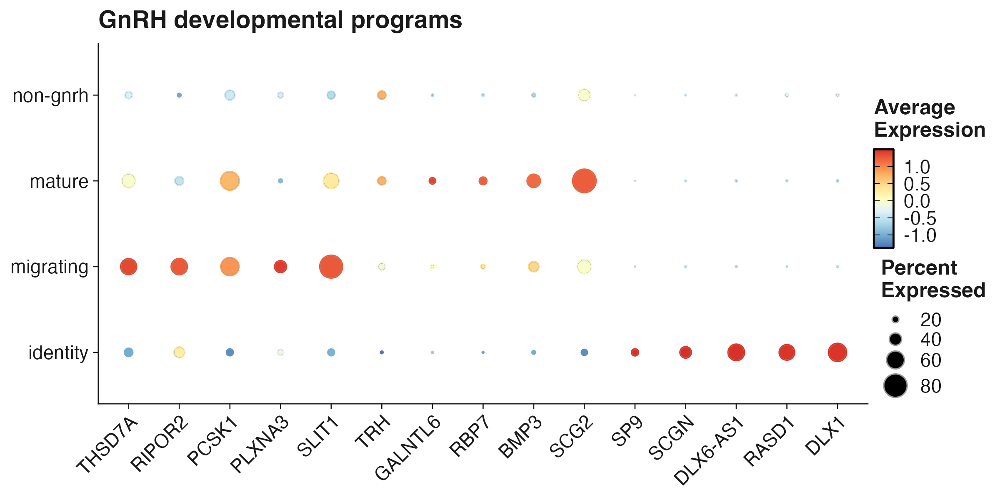
The complete result is available in hpsc-stage-markers.csv.
Retrieve the top markers per stage:
top_stage_markers <- stage_markers$candidates |>
dplyr::group_by(.data$stage) |>
dplyr::slice_max(
order_by = .data$stage_score,
n = 20,
with_ties = FALSE
) |>
dplyr::ungroup()
top_stage_markersCell-level differential expression is intended for marker discovery. Replicate-aware pseudobulk testing is recommended before making formal population-level claims.
Multi-dataset workflow
Configure datasets
Each row defines an independent Seurat dataset:
datasets <- data.frame(
id = c(
"hpsc",
"hudeca_nose",
"human_me",
"mouse_hypomap",
"human_hypomap"
),
label = c(
"Human hPSC",
"HuDeCa nose",
"Human ME",
"Mouse HypoMap",
"Human HypoMap"
),
species = c(
"Human",
"Human",
"Human",
"Mouse",
"Human"
),
file = file.path(
"inst/extdata",
paste0(
c(
"hpsc",
"hudeca_nose",
"human_me",
"mouse_hypomap",
"human_hypomap"
),
".rds"
)
),
split_by = c(
"orig.ident",
"orig.ident",
"orig.ident",
"orig.ident",
"orig.ident"
),
reduction = c(
"umap",
"umap",
"umap",
"umap",
"umap"
)
)For installed package data, replace the paths with calls to system.file().
Validate the configuration
datasets <- prepare_gnrh_datasets(
datasets,
check_files = TRUE,
remove_missing = FALSE
)
datasetsValidation result for the bundled configuration:
| ID | Species | File | Reduction | Status |
|---|---|---|---|---|
hpsc |
Human | inst/extdata/hpsc.rds |
UMAP | Ready |
hudeca_nose |
Human | inst/extdata/hudeca_nose.rds |
UMAP | Ready |
human_me |
Human | inst/extdata/human_me.rds |
UMAP | Ready |
mouse_hypomap |
Mouse | inst/extdata/mouse_hypomap.rds |
UMAP | Ready |
human_hypomap |
Human | inst/extdata/human_hypomap.rds |
UMAP | Ready |
Run the collection
collection <- run_gnrh_collection(
datasets = datasets,
output_dir = "gnrh_results",
run_markers = TRUE,
run_comparisons = TRUE,
run_programs = TRUE,
clean_objects = FALSE,
save_objects = FALSE
)
comparison <- collection$comparisons
comparison$runtime_plot
comparison$detected_plot
comparison$overlap
comparison$programs
comparison$gallery$umap_plot
comparison$gallery$stage_plotCollection gallery assets
run_gnrh_collection() now builds the cross-dataset gallery as part of its comparison step. With clean_objects = FALSE, it uses the processed objects kept in memory. With save_objects = TRUE, it can load them from the collection output directory. The configured reduction is respected, including umap_scvi.
collection$comparisons$gallery$summary
collection$comparisons$gallery$umap_plot
collection$comparisons$gallery$stage_plot
names(collection$results)
names(collection$comparisons)
collection$comparisons$runtime_plot
collection$comparisons$detected_plot
collection$comparisons$programs$summaryThe workflow loads datasets sequentially, runs GnRHcell, creates dataset-level outputs, compares markers, and optionally identifies conserved programs.
For lower memory use:
collection <- run_gnrh_collection(
datasets = datasets,
output_dir = "gnrh_results",
clean_objects = TRUE,
save_objects = TRUE
)Validate a collection
Processed objects must remain available in the collection when running validation directly:
validation <- validate_gnrh_collection(
collection,
positive_classes = c("direct", "supported"),
assay = "RNA",
layer = "data"
)==== GNRH COLLECTION VALIDATION START ====
Summarizing datasets
Validating GnRH detection
Summarizing GNRH1-negative transcriptomic candidates
Checking status/class consistency
Summarizing GnRH evidence scores
Validating developmental stages
Summarizing biological marker expression
Validated 5 datasets; 11,260 cells; 1,517 GnRH-positive cells.
GNRH1-negative transcriptomic candidates: 14 (diagnostic only; not counted as GnRH-positive).
Developmental-stage refinements: 66 cells.
Migration refinement: 66 / 372 raw migrating cells reassigned (17.74%).
==== GNRH COLLECTION VALIDATION DONE ====
validation$detection
validation$status_class
validation$scores
validation$stages
validation$stage_class
validation$stage_refinement
validation$stage_reassignment
validation$migration_core
validation$biological_markersCross-dataset result:
| Dataset | Cells | GnRH detected | Identity | Migrating | Mature |
|---|---|---|---|---|---|
| hPSC-derived GnRH | 2,400 | 657 | 341 | 118 | 198 |
| Human fetal nose | 2,125 | 125 | 57 | 58 | 10 |
| Human median eminence | 2,161 | 161 | 42 | 25 | 94 |
| Mouse HypoMap | 2,174 | 174 | 10 | 0 | 164 |
| Human HypoMap | 2,400 | 400 | 27 | 105 | 268 |
Run one dataset
result <- run_gnrh_dataset(
object = hpsc,
dataset_id = "hpsc",
dataset_label = "Human hPSC",
split_by = "orig.ident",
reduction = "umap",
output_dir = "hpsc_gnrh_results",
run_markers = TRUE,
clean_object = FALSE
)
result$run_info
head(result$markers)Running GnRHcell: Human hPSC
[GNRH] ==== STARTING GnRHcell PIPELINE ====
[STEP] [1/3] Detecting GnRH cells
[INFO] Using assay: RNA
[INFO] Matrix loaded: 33538 genes by 2400 cells
[INFO] Using GnRH gene: GNRH1
[DONE] Detection complete. Duration: 0.4s
[STEP] [2/3] Assigning developmental stages
[DONE] Staging complete. Duration: 0.1s
[STEP] [3/3] Running diagnostics
[DONE] Diagnostics complete. Duration: 0.0s
[INFO] PIPELINE SUMMARY
[INFO] Status:
[INFO] neg: 1743
[INFO] pos: 657
[INFO] Stage:
[INFO] identity: 341
[INFO] migrating: 118
[INFO] mature: 198
[INFO] non-gnrh: 1743
[INFO] Secretory:
[INFO] limited: 118
[INFO] supported: 539
[INFO] non-gnrh: 1743
[DONE] ==== GnRHcell PIPELINE COMPLETE ==== Duration: 0.6s
[INFO] Generating publication-ready GnRH QC report
[GNRH] GnRH marker discovery
[STEP] Running DE method: wilcox
[DONE] Markers detected: 105 Duration: 3.1s
[INFO] Top marker: GNRH1Cross-dataset comparisons
comparison <- compare_gnrh_datasets(
datasets = datasets,
output_dir = "gnrh_results",
run_programs = TRUE,
run_gallery = TRUE,
objects = lapply(collection$results, `[[`, "object")
)
comparison$runtime_plot
comparison$detected_plot
comparison$overlap
comparison$programs
comparison$gallery
comparison$gallery$summary
comparison$gallery$umap_plot
comparison$gallery$stage_plotMarker programs can also be generated from existing result tables:
files <- c(
"HuDeCa nose" = "gnrh_hudeca_nose_markers.tsv",
"Human hPSC" = "gnrh_hpsc_markers.tsv",
"Human medial eminence" = "gnrh_human_me_markers.tsv",
"Human HypoMap" = "gnrh_human_hypomap_markers.tsv",
"Mouse HypoMap" = "gnrh_mouse_hypomap_markers.tsv"
)
gene_sets <- build_gene_sets(
files = files,
dir = file.path("gnrh_results", "markers")
)
overlap <- gnrh_gene_upset(
gene_sets = gene_sets,
outdir = file.path("gnrh_results", "comparisons", "marker_overlap")
)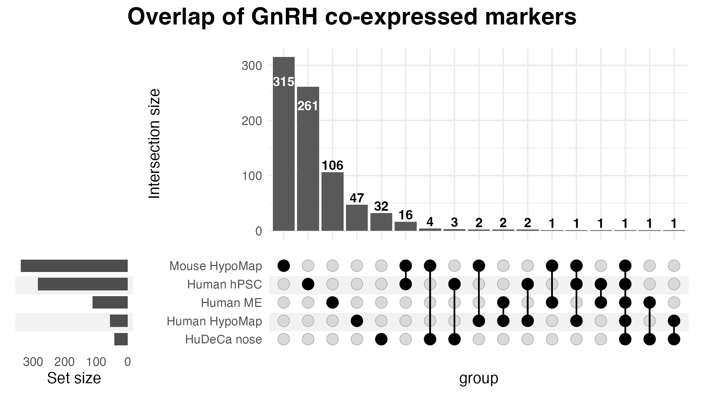
marker_dir <- file.path("gnrh_results", "markers")
files <- c(
"Human hPSC" = "gnrh_hpsc_markers.tsv",
"HuDeCa nose" = "gnrh_hudeca_nose_markers.tsv",
"Human medial eminence" = "gnrh_human_me_markers.tsv",
"Human HypoMap" = "gnrh_human_hypomap_markers.tsv",
"Mouse HypoMap" = "gnrh_mouse_hypomap_markers.tsv"
)
files <- stats::setNames(
file.path(marker_dir, unname(files)),
names(files)
)
stopifnot(all(file.exists(files)))
files
programs <- gnrh_marker_programs(
files = files,
results = overlap,
outdir = "gnrh_results"
)Visualize the results:
plot_gnrh_marker_programs(
programs,
table = "high_confidence",
type = "bar"
)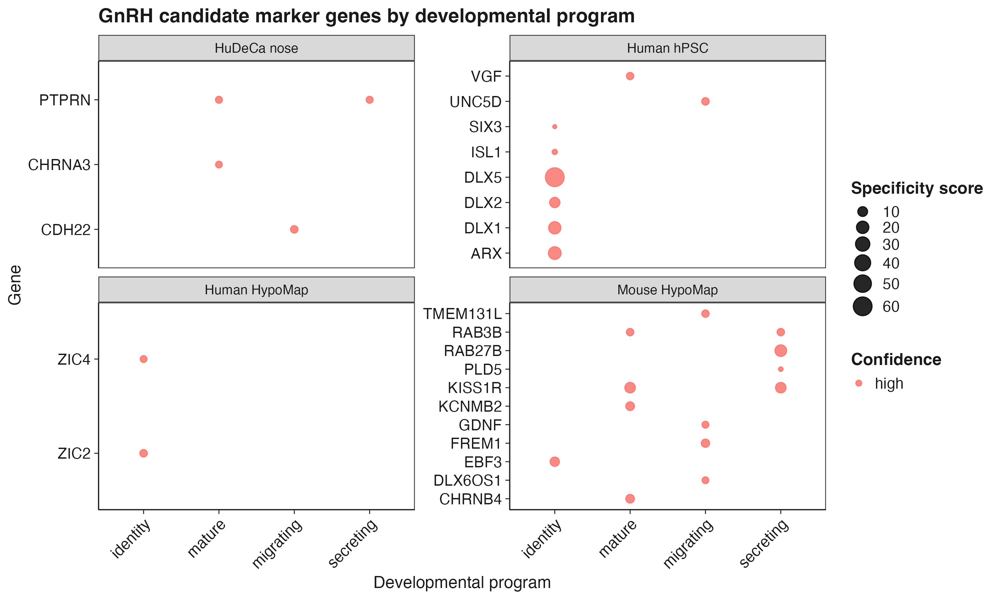
Main functions
Palettes and reference modules
See the function reference for the complete API.
Typical output structure
gnrh_results/
├── figures/
├── tables/
├── markers/
├── comparisons/
│ ├── marker_overlap/
│ ├── marker_programs/
│ └── gallery/
│ ├── collection-results.csv
│ ├── collection-umap-status.png
│ └── collection-stage-composition.png
├── validation/
└── objects/Objects are written to objects/ only when save_objects = TRUE.
Reproducibility and interpretation
- Join split Seurat v5 assay layers with
Seurat::JoinLayers()when required before marker analysis. - Use biological donors or samples as replicates for formal differential-expression inference.
- Treat internal ROC curves as score-separation diagnostics, not external validation.
- Confirm stage-specific candidates in independent datasets or with pseudobulk analyses.
- Report the GnRHcell version and principal thresholds used in an analysis.
Development
devtools::document()
devtools::test()
devtools::check()
pkgdown::build_site()Rebuild README.md after editing this source file:
devtools::build_readme()Citation
If you use GnRHcell, please cite:
Mbouamboua Y. GnRHcell: detection, developmental staging, and marker discovery for gonadotropin-releasing hormone neurons from single-cell RNA-seq data.
License
GnRHcell is available under the MIT License.